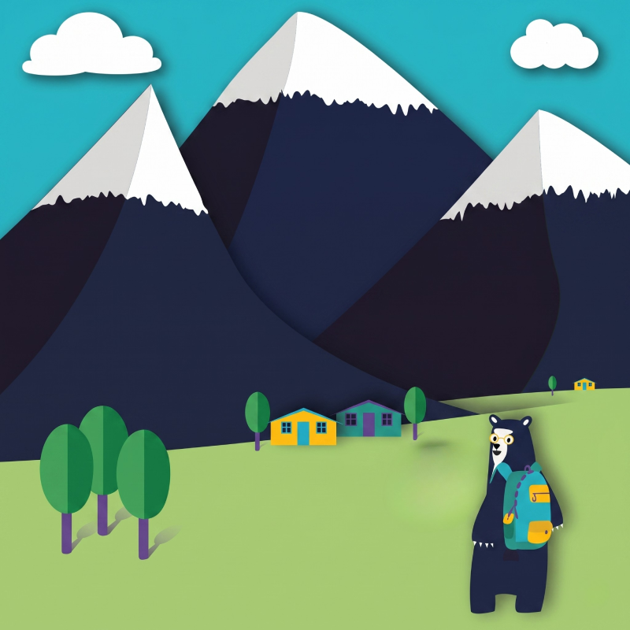
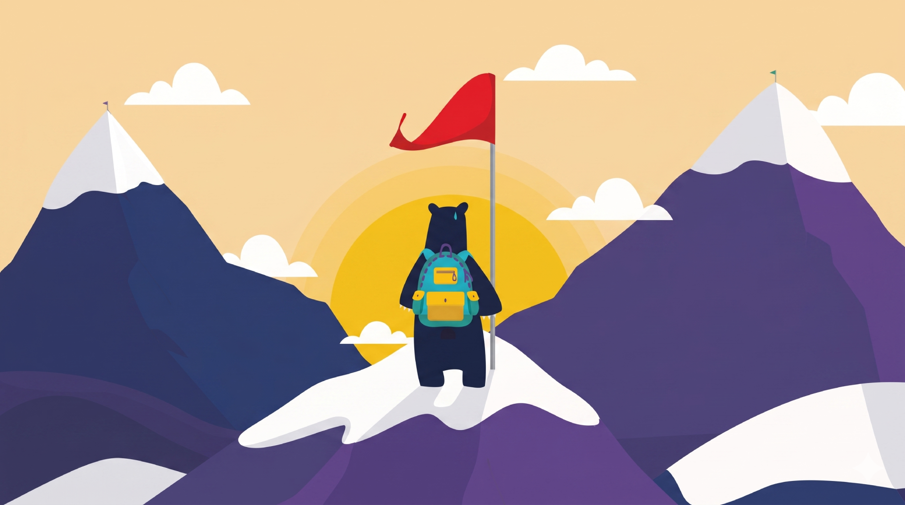

<!DOCTYPE html>
<html lang="es">
<head>
    <meta charset="UTF-8">
    <meta name="viewport" content="width=device-width, initial-scale=1.0">
    <title>OVI: Mundo Autoconocimiento - Guía para Docentes</title>
    <link rel="icon" type="image/x-icon" href="images/favicon.ico">
    <script src="https://cdn.tailwindcss.com"></script>
    <script src="https://unpkg.com/react@18/umd/react.production.min.js" crossorigin></script>
    <script src="https://unpkg.com/react-dom@18/umd/react-dom.production.min.js" crossorigin></script>
    <script src="https://unpkg.com/@babel/standalone@7.24.0/babel.min.js"></script>
    
    <style>
        @import url('https://fonts.googleapis.com/css2?family=Nunito:wght@400;600;700;800&display=swap');
        
        body {
            font-family: 'Nunito', sans-serif;
            margin: 0;
            padding: 0;
            background-color: #1e2238; /* Color azul oscuro de las montañas */
            overflow-x: hidden;
        }

        .custom-scrollbar::-webkit-scrollbar { width: 8px; }
        .custom-scrollbar::-webkit-scrollbar-track { background: #f1f1f1; border-radius: 4px; }
        .custom-scrollbar::-webkit-scrollbar-thumb { background: #cbd5e1; border-radius: 4px; }
        .custom-scrollbar::-webkit-scrollbar-thumb:hover { background: #94a3b8; }

        @keyframes customPing {
            75%, 100% { transform: scale(1.6); opacity: 0; }
        }
        .animate-custom-ping {
            animation: customPing 1.5s cubic-bezier(0, 0, 0.2, 1) infinite;
        }
        
        .modal-enter { animation: slideUpFade 0.4s ease-out forwards; }
        .fade-in { animation: fadeIn 0.8s ease-out forwards; }
        
        @keyframes slideUpFade {
            from { opacity: 0; transform: translateY(20px); }
            to { opacity: 1; transform: translateY(0); }
        }

        @keyframes fadeIn {
            from { opacity: 0; }
            to { opacity: 1; }
        }

        /* Camino punteado SVG sobre la imagen */
        .path-line {
            stroke-dasharray: 10;
            animation: dash 30s linear infinite;
        }
        @keyframes dash {
            to { stroke-dashoffset: -1000; }
        }
    </style>
</head>
<body>
    <div id="root"></div>

    <script type="text/babel" data-presets="react" data-type="module">
        const { useState } = React;

        const mapNodes = [
            {
                id: 1,
                title: "Tu historia de vida",
                subtitle: "El inicio de tu trayecto",
                icon: "M12 12c2.21 0 4-1.79 4-4s-1.79-4-4-4-4 1.79-4 4 1.79 4 4 4zm0 2c-2.67 0-8 1.34-8 4v2h16v-2c0-2.66-5.33-4-8-4z", 
                x: 65, y: 70,
                color: "bg-teal-500",
                content: "Como docente, tu historia de vida influye directamente en cómo acompañas a tus estudiantes. Conocer tus propios retos, logros y momentos clave te permite conectar con ellos desde la empatía y guiarlos con mayor autenticidad en su proceso de autoconocimiento.",
                exerciseTitle: "Tu Línea de Tiempo",
                exerciseContent: "Dibuja tu propia línea de vida. Identifica los momentos que te marcaron como persona y como docente: situaciones de orgullo, retos que superaste, decisiones que definieron tu camino. Este ejercicio te ayudará a reconocer tus fortalezas y a comprender cómo has llegado hasta aquí.",
                classroomApplication: "¿Cómo podrías movilizar este ejercicio en tus estudiantes? ¿Cómo hacer su propia línea de tiempo les puede ayudar a reconocer sus mayores fortalezas y proyectar futuros posibles?"
            },
            {
                id: 2,
                title: "Tus raíces",
                subtitle: "De dónde vienes",
                icon: "M17 3H7c-1.1 0-2 .9-2 2v16l7-3 7 3V5c0-1.1-.9-2-2-2z",
                x: 35, y: 55,
                color: "bg-purple-500",
                content: "Tu familia y tu entorno de origen moldearon tus valores, intereses y visión del mundo. Reconocer estas raíces te permite entender qué te motiva como educador y cómo puedes ayudar a tus estudiantes a valorar sus propias historias familiares como fuente de fortaleza.",
                exerciseTitle: "Tu Árbol Genealógico",
                exerciseContent: "Dibuja tu árbol genealógico abarcando al menos tres generaciones. Junto a cada persona, anota su nombre, lugar de nacimiento y qué hacían en su comunidad. Reflexiona: ¿Qué valores, oficios o tradiciones familiares influyeron en tu decisión de ser docente?",
                classroomApplication: "¿Cómo podrías replicar este ejercicio con tus estudiantes? ¿Qué podrían aprender de esta actividad sobre sus propias raíces e identidad?"
            },
            {
                id: 3,
                title: "Tus capacidades",
                subtitle: "Tus fortalezas como guía",
                icon: "M12 17.27L18.18 21l-1.64-7.03L22 9.24l-7.19-.61L12 2 9.19 8.63 2 9.24l5.46 4.73L5.82 21z",
                x: 25, y: 35,
                color: "bg-blue-500",
                content: "Has desarrollado habilidades a lo largo de tu vida que hoy pones al servicio de tus estudiantes. Reconocer tus propias competencias te permite modelar el autoconocimiento y ayudar a otros a descubrir las suyas. Solo quien conoce sus fortalezas puede ayudar a otros a encontrar las propias.",
                exerciseTitle: "Tu Inventario de Habilidades",
                exerciseContent: "Haz una lista de tus habilidades personales y profesionales. Para cada una, reflexiona: ¿Cómo la desarrollaste? ¿Qué experiencias te ayudaron a fortalecerla? Identifica cuáles usas en tu labor docente y cuáles podrías potenciar aún más.",
                classroomApplication: "¿Qué hace falta para que tus estudiantes conozcan mejor sus habilidades y las potencien? ¿Cómo vas a ayudarles a descubrirlas?"
            },
            {
                id: 4,
                title: "Tus sueños y proyecto de vida",
                subtitle: "Hacia dónde vas",
                icon: "M14 6l-3.8 9.5H8.5L12 3h2l3.5 12.5h-1.7L14 6zM3.5 18.5l4-4L6 13l-4 4 1.5 1.5z",
                x: 65, y: 30,
                color: "bg-yellow-500",
                content: "Tu proyecto de vida como docente está en constante evolución. Tener claridad sobre tus sueños y metas te permite inspirar a tus estudiantes a construir los suyos. Cuando tú te proyectas, les muestras que el futuro está lleno de posibilidades.",
                exerciseTitle: "El Diagrama de tus Sueños",
                exerciseContent: "Identifica 4 sueños o metas que tengas actualmente. Para cada uno, analiza: 1) ¿Qué habilidades necesitas desarrollar? 2) ¿Qué rasgos de tu personalidad te ayudan? 3) ¿Qué intereses se relacionan? 4) ¿Qué recursos tienes a tu alrededor?",
                classroomApplication: "¿Cómo este ejercicio puede ayudar a guiar a tus estudiantes en su proyección después del colegio? ¿Qué harías distinto en tu aula para que este ejercicio les resulte muy significativo?"
            },
            {
                id: 5,
                title: "Tu plan de acción",
                subtitle: "Haciendo realidad tus sueños",
                icon: "M9 16.17L4.83 12l-1.42 1.41L9 19 21 7l-1.41-1.41z",
                x: 48, y: 15,
                color: "bg-green-500",
                content: "Los sueños se concretan con planificación y acción. Como docente, tu capacidad de organizar metas y pasos te convierte en un modelo para tus estudiantes. Cuando tú planificas tu crecimiento, les enseñas que el futuro se construye con decisiones presentes.",
                exerciseTitle: "Tu Cronograma de Acción",
                exerciseContent: "Diseña un plan para los próximos dos meses. Organiza por semanas las acciones concretas que puedes hacer AHORA para acercarte a tus metas como docente. Ej: 'Implementar una nueva estrategia en el aula', 'Mentorear a un estudiante', 'Capacitarme en un tema específico'.",
                classroomApplication: "¿Cómo puedes adaptar este ejercicio a tus estudiantes de diferentes grados? ¿Cómo crees que esta actividad puede aportarles a sus aprendizajes y proyecto de vida?"
            }
        ];

        const App = () => {
            const [appState, setAppState] = useState('intro'); // intro, map, summit
            const [activeNode, setActiveNode] = useState(null);
            const [visitedNodes, setVisitedNodes] = useState([]);

            const handleNodeClick = (node) => {
                setActiveNode(node);
            };

            const saveAndContinue = () => {
                const isLastNode = activeNode.id === mapNodes.length;
                const newVisited = visitedNodes.includes(activeNode.id)
                    ? visitedNodes
                    : [...visitedNodes, activeNode.id];
                setVisitedNodes(newVisited);
                setActiveNode(null);
                if (isLastNode && newVisited.length === mapNodes.length) {
                    setAppState('summit');
                }
            };

            const closeModal = () => setActiveNode(null);
            const startJourney = () => setAppState('map');
            const restartJourney = () => {
                setVisitedNodes([]);
                setAppState('intro');
            };

            const progress = (visitedNodes.length / mapNodes.length) * 100;

            if (appState === 'intro') {
                return (
                    <div className="flex items-center justify-center min-h-screen bg-[#116e8f] p-6">
                        <div className="bg-white rounded-3xl shadow-2xl max-w-4xl w-full overflow-hidden flex flex-col md:flex-row fade-in">
                            <div className="w-full md:w-1/2 p-8 bg-[#eef7f9] flex flex-col items-center justify-center">
                                
                            </div>
                            <div className="w-full md:w-1/2 p-8 md:p-12 flex flex-col justify-center">
                                <h1 className="text-4xl font-extrabold text-[#1e2238] mb-4">Guía para Docentes</h1>
                                <p className="text-gray-600 text-lg mb-6 leading-relaxed">
                                    Antes de guiar a tus estudiantes en el viaje del autoconocimiento, te invitamos a recorrer tú mismo este camino. 
                                    Solo quien se conoce puede inspirar a otros a conocerse.
                                </p>
                                <ul className="space-y-4 mb-8">
                                    <li className="flex items-center text-gray-700">
                                        <div className="bg-yellow-400 p-2 rounded-full mr-4 shadow-sm"><svg className="w-5 h-5 text-white" fill="none" stroke="currentColor" viewBox="0 0 24 24"><path strokeLinecap="round" strokeLinejoin="round" strokeWidth="2" d="M5 13l4 4L19 7"></path></svg></div>
                                        Explora cada estación y reflexiona sobre tu propia historia.
                                    </li>
                                    <li className="flex items-center text-gray-700">
                                        <div className="bg-teal-500 p-2 rounded-full mr-4 shadow-sm"><svg className="w-5 h-5 text-white" fill="none" stroke="currentColor" viewBox="0 0 24 24"><path strokeLinecap="round" strokeLinejoin="round" strokeWidth="2" d="M15.232 5.232l3.536 3.536m-2.036-5.036a2.5 2.5 0 113.536 3.536L6.5 21.036H3v-3.572L16.732 3.732z"></path></svg></div>
                                        Realiza los ejercicios y descubre cómo llevarlos a tu aula.
                                    </li>
                                    <li className="flex items-center text-gray-700">
                                        <div className="bg-purple-500 p-2 rounded-full mr-4 shadow-sm"><svg className="w-5 h-5 text-white" fill="none" stroke="currentColor" viewBox="0 0 24 24"><path strokeLinecap="round" strokeLinejoin="round" strokeWidth="2" d="M12 6.253v13m0-13C10.832 5.477 9.246 5 7.5 5S4.168 5.477 3 6.253v13C4.168 18.477 5.754 18 7.5 18s3.332.477 4.5 1.253m0-13C13.168 5.477 14.754 5 16.5 5c1.747 0 3.332.477 4.5 1.253v13C19.832 18.477 18.247 18 16.5 18c-1.746 0-3.332.477-4.5 1.253"></path></svg></div>
                                        Conecta tu experiencia con la guía a tus estudiantes.
                                    </li>
                                </ul>
                                <button onClick={startJourney} className="bg-[#1e2238] hover:bg-[#2c3252] text-white text-lg font-bold py-4 px-8 rounded-xl shadow-lg transition-transform transform hover:scale-105">
                                    ¡Comenzar mi viaje!
                                </button>
                            </div>
                        </div>
                    </div>
                );
            }

            if (appState === 'summit') {
                return (
                    <div className="flex flex-col items-center min-h-screen bg-[#1e2238] relative overflow-hidden fade-in">
                        <div className="absolute inset-0 z-0">
                            
                        </div>
                        
                        <div className="absolute top-4 left-4 z-10 bg-white/75 backdrop-blur-sm p-3 md:p-4 rounded-lg shadow-lg max-w-xs text-left border-2 border-yellow-400">
                            <h2 className="text-lg md:text-xl font-extrabold text-[#1e2238] mb-1">¡Felicidades, docente!</h2>
                            <p className="text-xs text-gray-700 mb-2 leading-relaxed">
                                Has completado tu viaje de autoconocimiento.
                            </p>
                            <p className="text-xs text-gray-600 mb-3 italic">
                                "Solo quien se conoce puede ayudar a otros a conocerse."
                            </p>
                            <button onClick={restartJourney} className="bg-yellow-500 hover:bg-yellow-400 text-[#1e2238] font-bold py-1 px-4 rounded-lg shadow-md transition-colors text-xs">
                                Volver a explorar
                            </button>
                        </div>
                    </div>
                );
            }

            return (
                <div className="relative w-full h-screen overflow-hidden bg-[#1e2238] flex flex-col fade-in">
                    
                    {/* Encabezado OSO (Estilo acorde a las imágenes) */}
                    <header className="relative z-20 bg-[#1e2238] shadow-lg px-6 py-4 flex flex-col sm:flex-row items-center justify-between border-b border-gray-700">
                        <div className="flex items-center gap-3">
                            <div className="bg-yellow-400 text-[#1e2238] p-2 rounded-xl shadow-inner">
                                <svg className="w-7 h-7" fill="currentColor" viewBox="0 0 24 24">
                                    <path d="M14 6l-3.8 9.5H8.5L12 3h2l3.5 12.5h-1.7L14 6zM3.5 18.5l4-4L6 13l-4 4 1.5 1.5z"/>
                                </svg>
                            </div>
                            <div>
                                <h1 className="text-xl md:text-2xl font-bold text-white leading-tight tracking-wide">Mundo Autoconocimiento</h1>
                                <p className="text-sm text-yellow-400 font-semibold uppercase tracking-wider">Guía para Docentes</p>
                            </div>
                        </div>
                        
                        {/* Barra de progreso */}
                        <div className="mt-4 sm:mt-0 w-full sm:w-72 bg-gray-800 p-3 rounded-xl border border-gray-700 shadow-inner">
                            <div className="flex justify-between text-xs font-bold text-gray-300 mb-2">
                                <span>TU PROGRESO</span>
                                <span className="text-yellow-400">{visitedNodes.length} / {mapNodes.length}</span>
                            </div>
                            <div className="w-full bg-gray-600 rounded-full h-3">
                                <div className="bg-green-400 h-3 rounded-full transition-all duration-700 shadow-[0_0_10px_rgba(74,222,128,0.6)]" style={{ width: `${progress}%` }}></div>
                            </div>
                        </div>
                    </header>

                    {/* Contenedor Principal Interactiva usando la imagen de fondo */}
                    <main className="relative flex-grow w-full">
                        <div 
                            className="absolute inset-0 w-full h-full bg-cover bg-bottom md:bg-center"
                            style={{ backgroundImage: "url('images/image_a4ab77.png')" }}
                        ></div>
                        
                        {/* Capa SVG para dibujar el sendero entre los puntos */}
                        <svg className="absolute inset-0 w-full h-full pointer-events-none z-0">
                            <path 
                                d={`M ${mapNodes[0].x}% ${mapNodes[0].y}% L ${mapNodes[1].x}% ${mapNodes[1].y}% L ${mapNodes[2].x}% ${mapNodes[2].y}% L ${mapNodes[3].x}% ${mapNodes[3].y}% L ${mapNodes[4].x}% ${mapNodes[4].y}%`} 
                                fill="none" 
                                stroke="rgba(255, 255, 255, 0.4)" 
                                strokeWidth="4" 
                                strokeDasharray="8 8" 
                                strokeLinecap="round"
                            />
                        </svg>

                        {/* Puntos Interactivos (Hotspots) */}
                        {mapNodes.map((node, index) => {
                            const isVisited = visitedNodes.includes(node.id);
                            const isActive = activeNode && activeNode.id === node.id;
                            const isNext = !isVisited && (visitedNodes.length === index); // Es el siguiente en el orden
                            
                            return (
                                <button 
                                    key={node.id}
                                    onClick={() => handleNodeClick(node)}
                                    className="absolute transform -translate-x-1/2 -translate-y-1/2 z-10 focus:outline-none group"
                                    style={{ left: `${node.x}%`, top: `${node.y}%` }}
                                    aria-label={`Ver ${node.title}`}
                                >
                                    {/* Indicador de "Siguiente" palpitante */}
                                    {isNext && !isActive && (
                                        <div className={`absolute inset-0 rounded-full opacity-80 animate-custom-ping ${node.color}`}></div>
                                    )}
                                    
                                    {/* Botón central (Punto de la montaña) */}
                                    <div className={`relative flex items-center justify-center w-12 h-12 md:w-14 md:h-14 rounded-full shadow-2xl transition-all duration-300 transform group-hover:scale-110 border-4 ${isVisited ? 'border-gray-300 bg-gray-500' : `border-white ${node.color}`}`}>
                                        <span className="text-white font-black text-xl md:text-2xl">{node.id}</span>
                                    </div>
                                    
                                    {/* Tooltip flotante (siempre visible en desktop, o en hover) */}
                                    <div className="absolute top-full left-1/2 transform -translate-x-1/2 mt-3 w-max px-4 py-2 bg-[#1e2238] border border-gray-600 text-white text-sm font-bold rounded-lg shadow-xl opacity-0 group-hover:opacity-100 transition-opacity pointer-events-none z-20">
                                        <div className="absolute -top-2 left-1/2 transform -translate-x-1/2 w-4 h-4 bg-[#1e2238] border-t border-l border-gray-600 rotate-45"></div>
                                        <span className="relative z-10">{node.title}</span>
                                    </div>
                                </button>
                            );
                        })}
                    </main>

                    {}
                    {activeNode && (
                        <div className="absolute inset-0 z-50 flex items-center justify-center p-4 md:p-6 bg-[#1e2238]/80 backdrop-blur-sm transition-opacity">
                            <div className="modal-enter relative w-full max-w-3xl bg-white rounded-3xl shadow-2xl overflow-hidden flex flex-col max-h-[90vh]">
                                
                                {/* Decoración superior modal */}
                                <div className={`h-4 w-full ${activeNode.color}`}></div>
                                
                                {/* Botón cerrar */}
                                <button 
                                    onClick={closeModal}
                                    className="absolute top-6 right-6 p-2 bg-gray-100 text-gray-600 rounded-full hover:bg-red-100 hover:text-red-600 transition-colors focus:outline-none z-10"
                                >
                                    <svg className="w-6 h-6" fill="none" stroke="currentColor" viewBox="0 0 24 24">
                                        <path strokeLinecap="round" strokeLinejoin="round" strokeWidth="2" d="M6 18L18 6M6 6l12 12"></path>
                                    </svg>
                                </button>

                                <div className="p-6 md:p-10 overflow-y-auto custom-scrollbar flex-grow">
                                    
                                    {/* Cabecera del Modal */}
                                    <div className="flex items-center gap-5 mb-8 border-b pb-6">
                                        <div className={`p-4 rounded-2xl shadow-lg ${activeNode.color} text-white`}>
                                            <svg className="w-10 h-10" fill="currentColor" viewBox="0 0 24 24">
                                                <path d={activeNode.icon}/>
                                            </svg>
                                        </div>
                                        <div>
                                            <div className="flex items-center gap-2 mb-1">
                                                <span className={`text-xs font-black px-2 py-1 rounded-md text-white ${activeNode.color}`}>ESTACIÓN {activeNode.id}</span>
                                                <h2 className="text-sm font-bold tracking-wider text-gray-500 uppercase">{activeNode.subtitle}</h2>
                                            </div>
                                            <h3 className="text-3xl md:text-4xl font-extrabold text-[#1e2238]">{activeNode.title}</h3>
                                        </div>
                                    </div>
                                    
                                    {/* Concepto Teórico */}
                                    <div className="mb-8">
                                        <p className="text-lg text-gray-700 leading-relaxed font-medium">{activeNode.content}</p>
                                    </div>

                                    {/* Sección: Ejercicio Práctico */}
                                    <div className="mb-8 relative bg-emerald-50 rounded-2xl p-6 md:p-8 border border-emerald-200 shadow-sm">
                                        <div className="absolute top-0 right-0 transform translate-x-2 -translate-y-4">
                                            <div className="bg-emerald-500 text-white p-3 rounded-full shadow-lg">
                                                <svg className="w-6 h-6" fill="none" stroke="currentColor" viewBox="0 0 24 24">
                                                    <path strokeLinecap="round" strokeLinejoin="round" strokeWidth="2" d="M15.232 5.232l3.536 3.536m-2.036-5.036a2.5 2.5 0 113.536 3.536L6.5 21.036H3v-3.572L16.732 3.732z"></path>
                                                </svg>
                                            </div>
                                        </div>
                                        <h4 className="font-extrabold text-emerald-900 text-xl mb-3 flex items-center gap-2">
                                            Tu ejercicio: {activeNode.exerciseTitle}
                                        </h4>
                                        <p className="text-emerald-800 leading-relaxed text-lg bg-white p-4 rounded-xl border border-emerald-100 shadow-inner">
                                            {activeNode.exerciseContent}
                                        </p>
                                    </div>

                                    {/* Sección: Momento de Reflexión Personal */}
                                    <div className="bg-[#eef7f9] p-6 rounded-2xl border-l-4 border-[#116e8f] flex gap-4 items-start mb-6">
                                        <div className="bg-[#116e8f] p-2 rounded-xl text-white flex-shrink-0 mt-1 shadow-md">
                                            <svg className="w-6 h-6" fill="none" stroke="currentColor" viewBox="0 0 24 24">
                                                <path strokeLinecap="round" strokeLinejoin="round" strokeWidth="2" d="M9.663 17h4.673M12 3v1m6.364 1.636l-.707.707M21 12h-1M4 12H3m3.343-5.657l-.707-.707m2.828 9.9a5 5 0 117.072 0l-.548.547A3.374 3.374 0 0014 18.469V19a2 2 0 11-4 0v-.531c0-.895-.356-1.754-.988-2.386l-.548-.547z"></path>
                                            </svg>
                                        </div>
                                        <div>
                                            <h4 className="font-bold text-[#1e2238] text-lg">Tu reflexión personal</h4>
                                            <p className="text-[#116e8f] mt-2 leading-relaxed">
                                                Antes de continuar, detente un momento. ¿Qué descubriste sobre ti al realizar este ejercicio? ¿Cómo influye este aprendizaje en tu forma de acompañar a tus estudiantes? Respira profundo y lleva esta reflexión a tu aula.
                                            </p>
                                        </div>
                                    </div>

                                    {/* Sección: Aplicación en el Aula */}
                                    <div className="bg-amber-50 p-6 rounded-2xl border-l-4 border-amber-500 flex gap-4 items-start">
                                        <div className="bg-amber-500 p-2 rounded-xl text-white flex-shrink-0 mt-1 shadow-md">
                                            <svg className="w-6 h-6" fill="none" stroke="currentColor" viewBox="0 0 24 24">
                                                <path strokeLinecap="round" strokeLinejoin="round" strokeWidth="2" d="M12 6.253v13m0-13C10.832 5.477 9.246 5 7.5 5S4.168 5.477 3 6.253v13C4.168 18.477 5.754 18 7.5 18s3.332.477 4.5 1.253m0-13C13.168 5.477 14.754 5 16.5 5c1.747 0 3.332.477 4.5 1.253v13C19.832 18.477 18.247 18 16.5 18c-1.746 0-3.332.477-4.5 1.253"></path>
                                            </svg>
                                        </div>
                                        <div>
                                            <h4 className="font-bold text-amber-900 text-lg">Aplicación en el aula</h4>
                                            <p className="text-amber-800 mt-2 leading-relaxed font-medium">
                                                {activeNode.classroomApplication}
                                            </p>
                                        </div>
                                    </div>
                                </div>
                                
                                {/* Footer modal */}
                                <div className="bg-gray-50 p-4 px-6 border-t border-gray-200 flex justify-between items-center">
                                    <span className="text-sm font-semibold text-gray-500">Estación {activeNode.id} de 5</span>
                                    <button 
                                        onClick={saveAndContinue}
                                        className={`px-8 py-3 text-white font-extrabold rounded-xl shadow-lg transition-transform transform hover:-translate-y-1 ${activeNode.color}`}
                                    >
                                        {activeNode.id === mapNodes.length ? '¡Llegar a la cima!' : 'Guardar y continuar'}
                                    </button>
                                </div>
                            </div>
                        </div>
                    )}
                </div>
            );
        };

        const root = ReactDOM.createRoot(document.getElementById('root'));
        root.render(<App />);
    </script>
</body>
</html>